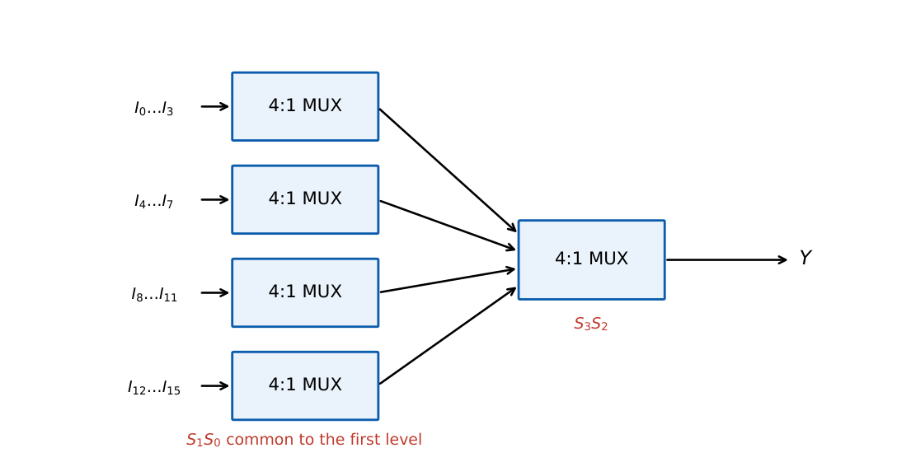

Multiplexers, Decoders, Encoders and Code Converters
In this chapter
Implementing functions with MUXes (variable-entered inputs) and decoders, building large MUX/decoder trees from small ones, priority-encoder logic and standard code converters.
6.1 Multiplexer (data selector)
A \(2^n:1\) MUX has \(2^n\) data inputs \(I_j\), \(n\) select lines \(S_{n-1}\dots S_0\) and one output. With select value \(j\) the output equals \(I_j\): \[ Y=\sum_{j=0}^{2^n-1} m_j(S)\,I_j . \] For a \(4{:}1\) MUX, \(Y=\overline S_1\overline S_0I_0+\overline S_1S_0I_1+S_1\overline S_0I_2+S_1S_0I_3\). A MUX with an enable has \(Y=0\) (or high-impedance) when disabled.
6.1.1 Implementing a Boolean function with a MUX
A function of \(n\) variables can be implemented with a \(2^n{:}1\) MUX by tying the inputs to \(0/1\) from the truth table.
Variable-entered method: use a \(2^{n-1}{:}1\) MUX. Choose \(n-1\) variables as selects; the remaining variable \(X\) (usually the LSB) appears as data: for each pair of rows that share select value, the data input is \(0\) (both rows 0), \(1\) (both 1), \(X\) (only the row with \(X=1\) is 1) or \(\overline X\) (only the row with \(X=0\) is 1).
\(F=A\oplus B\oplus C=\sum m(1,2,4,7)\). Use \(S_1=A\), \(S_0=B\). Rows \((AB=00)\): \(m_0=0,m_1=1\Rightarrow I_0=C\). \((01)\): \(m_2=1,m_3=0\Rightarrow I_1=\overline C\). \((10)\): \(m_4=1,m_5=0\Rightarrow I_2=\overline C\). \((11)\): \(m_6=0,m_7=1\Rightarrow I_3=C\).
\(F(A,B,C,D)=\sum m(1,3,4,5,9,11,14)\) with \(S_2S_1S_0=ABC\), data from \(D\): pairs \((0,1)\to D\); \((2,3)\to D\); \((4,5)\to1\); \((6,7)\to0\); \((8,9)\to D\); \((10,11)\to D\); \((12,13)\to0\); \((14,15)\to\overline D\).
So \(I_0=I_1=I_4=I_5=D\), \(I_2=1\), \(I_3=I_6=0\), \(I_7=\overline D\).
6.1.2 MUX trees
A \(2^m{:}1\) MUX can be built from \(2^k{:}1\) MUXes; the number of \(2^k{:}1\) MUXes required is \[ N=\frac{2^m-1}{2^k-1}\quad\text{(when it divides exactly).} \] So \(16{:}1\) from \(4{:}1\): \(\frac{15}{3}=5\) MUXes (four in the first level, one in the second); \(64{:}1\) from \(4{:}1\): \(\frac{63}{3}=21\); \(8{:}1\) from \(2{:}1\): \(7\); \(64{:}1\) from \(8{:}1\): \(\frac{63}{7}=9\). When \(m\) is not a multiple of \(k\), count level by level, rounding up (for example \(32{:}1\) from \(4{:}1\): \(8\) first-level MUXes, then \(2\), then \(1\), giving \(11\)).

6.2 Demultiplexer and decoder
A \(1{:}2^n\) DEMUX routes the data input to the output selected by \(n\) address lines. Used with the data input held at 1 it becomes an \(n{:}2^n\) decoder that activates exactly one output \(Y_j=m_j(A)\) (with enable). Active-low decoders (74x138) give \(\overline{Y_j}=\overline{m_j}\).
Any function \(F=\sum m(\dots)\) is the OR of the corresponding decoder outputs. With an active-low decoder use a NAND: \(F=\overline{\overline{Y_{i}}\cdot\overline{Y_{j}}\cdots}\). If more than half the minterms are required, build \(\overline F\) and invert (or use a NOR with active-high outputs).
A full adder: \(S=\sum m(1,2,4,7)\), \(C_{out}=\sum m(3,5,6,7)\) from one \(3{:}8\) decoder and two OR gates.
6.2.1 Cascading decoders
A \(4{:}16\) decoder from \(2{:}4\) decoders: \(4+1=5\) decoders (the first decodes \(A_3A_2\) and enables one of four second-level decoders on \(A_1A_0\)). A \(3{:}8\) from two \(2{:}4\) decoders with enable uses \(A_2\) as enable of one decoder and its complement for the other.
6.3 Encoder
An encoder is the inverse of a decoder: \(2^n\) input lines, \(n\) output bits. A simple encoder assumes only one input active. A priority encoder outputs the binary code of the highest-priority active input and a valid flag \(V=\sum D_i\).
\(Y_2=D_7+D_6+D_5+D_4\)
\(Y_1=D_7+D_6+\overline{D_5}\,\overline{D_4}\,D_3+\overline{D_5}\,\overline{D_4}\,D_2\)
\(Y_0=D_7+\overline{D_6}D_5+\overline{D_6}\,\overline{D_4}D_3+\overline{D_6}\,\overline{D_4}\,\overline{D_2}D_1\)
A plain (non-priority) octal-to-binary encoder: \(Y_2=D_4+D_5+D_6+D_7\), \(Y_1=D_2+D_3+D_6+D_7\), \(Y_0=D_1+D_3+D_5+D_7\).
6.4 Code converters
- Binary \(\to\) Gray: \(G_3=B_3\), \(G_i=B_{i+1}\oplus B_i\) (3 XORs for 4 bits). Gray \(\to\) binary: cascaded XORs.
- BCD \(\to\) excess-3: add \(0011\); a 4-bit adder with constant input, or K-map logic.
- BCD \(\to\) seven-segment: each segment \(a\ldots g\) is a function of \(ABCD\) with \(d\) for codes \(10\)–\(15\).
- Parity generator/checker: XOR tree of \(n-1\) gates for \(n\) bits.
- Binary \(\to\) BCD: add-3 shift ("double-dabble") algorithm.
6.5 Tri-state buffers and buses
A tri-state buffer has an enable: output \(=\) input when enabled, high impedance (Z) otherwise. Several tri-state outputs share a bus provided only one is enabled at a time; a MUX is the alternative with no contention possibility.
(i) A \(2^{n-1}{:}1\) MUX realises any \(n\)-variable function only if the data inputs may be \(0,1,X,\overline X\). (ii) The MUX-tree formula \((2^m-1)/(2^k-1)\) requires \(m\) to be a multiple of \(k\) for a clean count. (iii) A priority encoder is not the same as a simple encoder when two inputs are active. (iv) Active-low decoder outputs need NAND (not OR) to build a function.
\(n\) variables with a \(2^{n-1}{:}1\) MUX: pair up the truth-table rows and look at the pattern \(00\to0\), \(11\to1\), \(01\to X\), \(10\to\overline X\). The sum bit of a full adder is a parity: use the XOR pattern (\(C,\overline C,\overline C,C\)). Count of \(4{:}1\) MUXes for \(4^k{:}1\): \((4^k-1)/3\).
6.6 GATE problems
Q1. The number of \(4{:}1\) multiplexers needed to build a \(64{:}1\) multiplexer: (A) 16 (B) 17 (C) 21 (D) 64.
Q2. A \(3{:}8\) decoder with active-high outputs and one OR gate implements \(F=\sum m(1,4,6)\) by (A) OR of \(Y_1,Y_4,Y_6\) (B) AND of the same (C) NAND of \(Y_1,Y_4,Y_6\) (D) XOR of \(Y_1,Y_4,Y_6\).
Q3. The number of select lines for a \(32{:}1\) multiplexer: (A) 4 (B) 5 (C) 16 (D) 32.
Q4. A priority encoder has inputs \(D_3D_2D_1D_0=0110\) (\(D_3\) highest). The output code is (A) 00 (B) 01 (C) 10 (D) 11.
Answers: Q1 (C): \((64-1)/(4-1)=21\). Q2 (A). Q3 (B). Q4 (C): highest active input is \(D_2\).
Q5. A \(4{:}1\) MUX with \(S_1=A,\ S_0=B\) implements \(F=\sum m(1,2,6,7)\) of \((A,B,C)\). The data inputs \((I_0,I_1,I_2,I_3)\) are (A) \(C,\overline C,0,1\) (B) \(C,\overline C,1,0\) (C) \(\overline C,C,0,1\) (D) \(C,C,0,1\).
Q6. The number of \(2{:}1\) multiplexers needed to build an \(8{:}1\) multiplexer: (A) 3 (B) 4 (C) 7 (D) 8.
Q7. A \(4{:}16\) decoder is built from \(2{:}4\) decoders with enable. The number of \(2{:}4\) decoders needed: (A) 4 (B) 5 (C) 8 (D) 16.
Answers: Q5 (A): \(AB=00\): \(m_0=0,m_1=1\to C\); \(01\): \(m_2=1,m_3=0\to\overline C\); \(10\): \(m_4=m_5=0\to0\); \(11\): \(m_6=m_7=1\to1\). Q6 (C): \(4+2+1=7\). Q7 (B): \(4+1=5\).
Q8. Number of \(3{:}8\) decoders (with enable) needed to build a \(6{:}64\) decoder: .
Q9. Number of \(2{:}1\) multiplexers needed to build a \(32{:}1\) multiplexer: .
Q10. Number of 2-input XOR gates in an 8-bit even-parity generator: .
Answers: Q8: \(1+8=9\). Q9: 31. Q10: 7.
Q11. Which statements are true? (A) A \(2^n{:}1\) MUX can realise any \(n\)-variable function. (B) A decoder plus an OR gate realises a sum of minterms. (C) A simple (non-priority) encoder is correct when several inputs are active. (D) A DEMUX with its data input tied to 1 behaves as a decoder.
Answers: Q11: (A), (B), (D).
T1. Select lines of a \(64{:}1\) MUX? T2. Implement \(F=\sum m(0,3)\) of \((A,B)\) with a \(2{:}1\) MUX, \(S=A\). T3. Output of an octal-to-binary priority encoder if \(D_5\) and \(D_2\) are active.
Answers: T1: 6. T2: \(F=\overline A\,\overline B+AB\), so \(I_0=\overline B\), \(I_1=B\). T3: \(101\) (\(D_5\) has higher priority).
- \(2^n{:}1\) MUX: \(Y=\sum m_jI_j\); \(2^{n-1}{:}1\) MUX with data \(0,1,X,\overline X\) for \(n\) variables.
- MUX tree count \((2^m-1)/(2^k-1)\); decoder \(=\) minterm generator, function \(=\) OR of outputs (NAND for active-low).
- Priority encoder uses highest active input; \(V=\sum D_i\).
- Binary \(\to\) Gray by XOR; BCD \(\to\) excess-3 add 3.